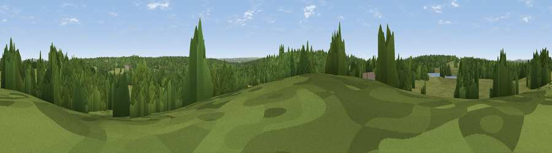

Spankers Hill
#45265 in England · top 74% of its area beats it · near Richmond · access?Where it is
The exact computed spot (TQ 20693 72747). Click the marker for map links.
Public access: no public right of way or access land is recorded at this exact spot — it may be on private land. Computed from Natural England's CRoW access layer and OpenStreetMap rights of way — not the legal definitive map. Always verify locally.
The view, rendered

A 360° render of this exact spot computed from the terrain model, tree cover and land cover — summer colours, afternoon light, calibrated against photographs of famous viewpoints. Real trees, hedges and buildings will differ in detail.
The panorama
Grey silhouette: terrain skyline in each direction (720 bearings, Earth curvature and refraction included). Dashed green: skyline with trees (+15 m) and buildings (+8 m) as obstacles. Blue strip: how far the ground is visible on each bearing.
Where the view opens
Wedge length = distance to the farthest visible ground on that bearing (vegetation-aware). Rings at 10, 25 and 50 km.
What fills the view
49% grassland · 45% woodland · 5% built-up ·
Angular shares of the visible panorama (visual magnitude), not map area. Landscape diversity 0.40 (0–1 Shannon).
Key numbers
More beautiful places nearby
The staircase of upgrades: each row has a higher view potential than everything closer. Driving times are estimates from straight-line distance, calibrated against real road routing — check an actual route before setting out.
| Place | Direction | Drive | Score |
|---|---|---|---|
| Viewpoint near Richmond | W · 2 km | ~5 min | 24.9 |
| Viewpoint near Richmond | WNW · 2 km | ~5 min | 28.4 |
| Viewpoint near Esher | SW · 10 km | ~20 min | 29.5 |
| Viewpoint near Esher | SW · 11 km | ~20 min | 30.2 |
| Viewpoint near West End | SW · 12 km | ~22 min | 30.4 |
| Viewpoint near Oxshott | SSW · 13 km | ~24 min | 33.7 |
| Viewpoint near Northolt | NW · 13 km | ~24 min | 37.7 |
| Harrow on the Hill | NNW · 16 km | ~28 min | 42.3 |
51.44086, -0.26485 · source: osm peak · position refined by local search. Computed location — check access rights before visiting.